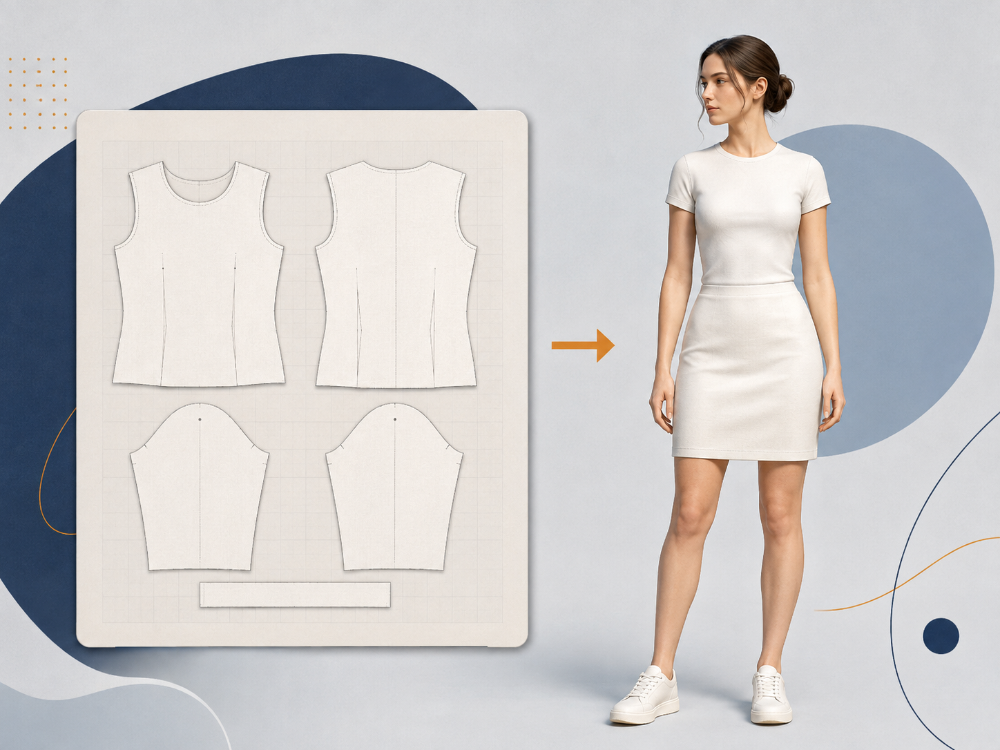

CLO 기본 학습: 티셔츠·스커트 제작으로 익히는 작업 흐름
2026.09.07
반팔 티셔츠와 기본 스커트를 제작하며 CLO의 2D·3D 화면, Object Browser, Property Editor, 패턴 수정·배치·재봉·GPU Simulation·원단 적용을 순서대로 익힙니다. 모든 메뉴는 실제 의상 제작 흐름 안에서 확인합니다.
이 자료는 메뉴를 나열하는 안내문이 아니라, 반팔 티셔츠와 기본 스커트 한 벌을 제작하면서 CLO의 화면과 도구를 익히는 실습 매뉴얼입니다. 모든 작업은 2D 패턴에서 형태를 결정하고, 3D 창에서 배치·봉제·GPU Simulation 결과를 확인한 뒤, 선택한 대상의 Property Editor 값을 검토하는 순서로 진행합니다. 결과가 예상과 다를 때는 값을 바로 바꾸기보다 패턴 형태, 재봉 방향, 초기 배치, 원단 순서로 원인을 확인합니다.
수업 결과물
수업 종료 전에는 다음 상태를 하나의 .zprj 파일에 저장합니다. ① 앞판·뒤판·소매가 재봉된 반팔 티셔츠, ② 앞판·뒤판이 재봉된 기본 스커트, ③ GPU Preset으로 확인한 시뮬레이션 결과, ④ 패턴에 적용한 Fabric과 속성값, ⑤ 이미지 레퍼런스로 생성한 정지 포즈입니다. 파일명과 제출 규칙은 해당 수업의 안내를 우선합니다.
1. 인터페이스와 메뉴의 역할
2D Pattern Window는 패턴의 외곽선·내부선·배치와 Transform 작업을 수행하는 화면입니다. 3D Garment Window는 아바타 위 의상, 원단의 반응, GPU Simulation 결과를 확인하는 화면입니다. Object Browser는 Scene·Environment·Fabric처럼 현재 프로젝트의 대상을 찾는 패널이고, Property Editor는 선택한 대상의 설정값을 읽고 조정하는 패널입니다. 같은 Property Editor라도 패턴, 아바타, 원단 중 무엇을 선택했는지에 따라 표시되는 항목이 달라집니다.
상단 메뉴와 좌·우 패널을 읽는 방법
현재 CLO 상단 메뉴는 File, Edit, 3D, 2D, Materials/UV, Avatar, Fabric, Production, Animation, Render, CONNECT, CLO-SET, Plugins, Settings, Help 순서로 구성됩니다. 처음부터 모든 메뉴를 외울 필요는 없습니다. 이 수업에서 우선 사용하는 메뉴는 다음과 같습니다. • File: 프로젝트 저장과 다른 이름으로 저장을 관리합니다. • 3D: 3D 창에서 의상·아바타·시뮬레이션 결과를 확인할 때 사용합니다. • 2D: 패턴 생성·수정·배치와 재봉 작업의 기준 메뉴입니다. • Avatar: 아바타 선택과 Image to Pose를 포함한 아바타 관련 작업에 사용합니다. • Fabric: 원단을 추가하고 패턴에 적용하며 Material과 Physical Property를 검토합니다. • Settings: 환경과 단축키, 화면 설정을 확인할 때 사용합니다. 왼쪽의 3D/2D Toolbar는 자주 쓰는 도구를 빠르게 실행하는 공간입니다. Object Browser에서는 ‘무엇을 조정할지’를 찾고, Property Editor에서는 ‘선택한 대상의 값’을 확인합니다. 패널 이름과 버튼 배치는 버전에 따라 조금 달라질 수 있으므로, 아래 공식 매뉴얼의 화면 캡처를 함께 참고합니다.
기본 의상에서 먼저 익힐 2D 도구
① Rectangle: 티셔츠·스커트의 기준 패턴을 빠르게 만듭니다. ② Edit Pattern: 목둘레·암홀·허리·밑단처럼 점과 선분의 실제 형태를 수정합니다. ③ Transform Pattern: 패턴 전체를 이동·회전·크기 조절합니다. ④ Segment Sewing: 두 선분을 명시적으로 연결합니다. ⑤ Placement Points / 3D 배치: 시뮬레이션 전 패턴을 아바타 주변에 정리합니다. 이 다섯 가지는 작업 순서대로 사용합니다. Rectangle로 시작 → Edit Pattern으로 형태 수정 → 3D 배치 → Segment Sewing → GPU Simulation → 2D로 돌아가 수정의 흐름을 반복합니다.
CLO 공식 매뉴얼: 2D 창 화면과 역할 확인↗선택 → 탐색 → 속성 확인의 순서
수업에서는 항상 ① 2D 또는 3D 화면에서 대상 선택, ② Object Browser에서 해당 탭으로 이동, ③ Property Editor에서 현재 값을 확인하는 순서로 작업합니다. 예를 들어 시뮬레이션은 Scene 탭, 원단은 Fabric 탭, 아바타는 3D 화면에서 아바타를 직접 선택한 뒤 확인합니다. 원하는 값이 보이지 않으면 먼저 선택 대상과 Object Browser 탭이 맞는지 확인합니다.
2. 실습 시작 전: 티셔츠·스커트 작업의 기준
이번 실습은 디테일을 많이 넣는 과제가 아닙니다. 티셔츠는 앞판·뒤판·좌우 소매, 스커트는 앞판·뒤판을 기본 단위로 잡고, 각 패턴이 어느 부위와 어떤 선분으로 이어지는지 명확하게 만드는 것이 우선입니다. 소매단, 밑단, 허리단의 봉제나 탑스티치, 다트, 지퍼는 기본 실루엣이 안정된 뒤에 추가합니다. 처음부터 낮은 Particle Distance나 복잡한 장식을 사용하면 오류 원인을 추적하기 어렵습니다.
작업 속도를 높이는 확인용 단축 조작
• F: 2D 창에서 선택한 패턴을 화면 중앙으로 확대합니다. • F12: 2D Grid Properties를 열어 격자 기준을 확인합니다. • 방향키: 선택한 점·선분 또는 패턴을 조금씩 이동합니다. • F1 또는 우클릭: 정확한 이동 수치가 필요한 경우 수치를 입력합니다. • Shift: 여러 대상을 함께 선택하거나, 도구에 따라 수평·수직·대각 방향을 유지합니다. • Ctrl: 도구별 보조 동작에 사용됩니다. 예를 들어 사각형 패턴 생성 중에는 중심 기준 생성에 사용됩니다. 단축키는 선택한 도구와 CLO 버전에 따라 달라질 수 있으므로, 화면 하단 안내와 해당 도구의 공식 매뉴얼을 함께 확인합니다.
2-1. 티셔츠 패턴 만들기: 먼저 2D에서 실루엣을 결정
기본 티셔츠는 앞판과 뒤판을 먼저 만든 뒤 소매를 추가합니다. 새 패턴의 시작점은 Main Menu > 2D Pattern > Create > Rectangle 또는 2D Toolbar의 Rectangle입니다. 드래그로 사각형을 만들거나, 2D 창을 한 번 클릭해 너비·높이를 수치로 입력할 수 있습니다. 앞판과 뒤판의 전체 길이와 옆선 길이는 처음부터 비슷하게 맞춰야 재봉 후 비틀림을 줄일 수 있습니다. 사각형을 만든 다음에는 Main Menu > 2D Pattern > Edit > Edit Pattern으로 점과 선분을 수정합니다. 목둘레와 암홀은 점·선분 편집으로 조정하고, 패턴 전체의 위치·크기·회전만 바꿀 때는 Transform Pattern을 사용합니다. 2D에서 목둘레·어깨·옆선·밑단을 먼저 확정한 뒤 3D로 보내야 합니다. 3D에서 당겨서 형태를 맞추는 방식은 최종 패턴 수정의 대체가 아닙니다.
2-2. 소매와 대칭 패턴: 한쪽을 완성하고 검증한 뒤 복제
소매는 한쪽 패턴을 먼저 만든 뒤 길이와 암홀 연결선을 확인하고 반대쪽을 만듭니다. 좌우 소매가 같은 형태여야 하는 기본 의상에서는 두 패턴을 각각 수정하기보다, Transform Pattern으로 한쪽을 선택해 우클릭 메뉴의 동시 수정 패턴 복제 > 대칭으로(패턴과 재봉선) 또는 대칭으로(패턴)를 사용합니다. 이미 양쪽 패턴이 있다면 두 패턴을 함께 선택한 뒤 동시 수정 설정으로 연결할 수 있습니다. 대칭 복제 전에는 소매산과 겨드랑이 쪽 선분이 어느 방향으로 재봉될지 확인합니다. 패턴 모양이 같아도 재봉 대상 선분이나 방향이 다르면 한쪽 소매만 꼬이거나 뒤집힐 수 있습니다.
2-3. 기본 스커트 만들기: 허리선·옆선·밑단을 구분
기본 스커트는 앞판과 뒤판 두 장으로 시작합니다. Rectangle으로 기준 형태를 만든 뒤, Edit Pattern으로 허리선·옆선·밑단의 역할을 구분합니다. A라인 실루엣이 필요하면 밑단 폭을 넓히고 옆선을 완만하게 연결합니다. 허리 폭을 바꾸고 싶을 때는 패턴 전체를 무작정 Scale하지 말고, 허리선과 옆선의 점·선분을 수정해 치수 변화가 어디에 생기는지 확인합니다. 앞판과 뒤판의 옆선 길이는 재봉 전에 비교합니다. 길이가 다르면 시뮬레이션을 반복해도 주름이나 끌림이 해소되지 않습니다. 다트·주름·허리밴드는 기본 앞뒤판이 안정된 후에 별도 단계로 추가합니다.
2-4. 3D 배치: 시뮬레이션 전에 아바타 주변에 정리
패턴을 만들었다고 바로 시뮬레이션하지 않습니다. 3D Garment Window에서 티셔츠 앞판은 몸통 앞, 뒤판은 몸통 뒤, 소매는 각각의 팔 주변에 배치합니다. 스커트 앞판과 뒤판은 골반의 앞·뒤에 놓습니다. 배치포인트를 사용하는 경우 아바타의 Placement Points를 표시하고, 패턴을 선택한 뒤 해당 포인트를 클릭해 기준 위치에 배치합니다. Property Editor의 기즈모와 위치값은 미세 조정에 사용합니다. 초기 배치에서 패턴이 서로 관통하거나 한 장이 아바타 반대편에 있으면 GPU Simulation을 여러 번 실행해도 정상적인 결과를 기대하기 어렵습니다. 먼저 3D 화면에서 각 패턴의 앞·뒤와 위치를 확인하고, 다음 단계로 넘어갑니다.
2-5. 재봉: 연결할 선분을 말로 설명할 수 있어야 함
기본 티셔츠는 앞판과 뒤판의 어깨선·옆선을 연결하고, 각 소매의 소매산을 암홀에 연결합니다. 기본 스커트는 앞판과 뒤판의 양쪽 옆선을 연결합니다. 먼저 재봉할 두 선분을 2D에서 확인하고, ‘앞판 오른쪽 옆선과 뒤판 왼쪽 옆선’처럼 연결 관계를 설명할 수 있는지 점검합니다. Main Menu > Sewing > Segment Sewing 또는 2D Toolbar의 Segment Sewing으로 두 선분을 차례로 선택합니다. Auto Sewing은 단순 티셔츠나 스커트의 첫 연결을 빠르게 확인하는 보조 기능으로 사용할 수 있지만, 자동 결과를 그대로 확정하지 않습니다. 봉제선의 대상·방향·교차 여부를 확인하고 필요하면 Segment Sewing으로 다시 지정합니다.
2-6. 첫 시뮬레이션의 목적: 완성본이 아니라 오류 찾기
첫 GPU Simulation에서는 주름의 예쁨보다 문제가 있는 위치를 찾습니다. 다음 순서로 확인합니다. ① 패턴이 아바타의 올바른 앞·뒤 위치에 놓였는가 ② 재봉선이 의도한 두 선분을 연결했는가 ③ 암홀과 소매산, 스커트 옆선처럼 길이를 맞춰야 하는 선분이 크게 다르지 않은가 ④ 패턴끼리 또는 아바타와 심하게 관통하지 않는가 ⑤ 원단이 올바른 패턴에 적용되었는가 문제가 보이면 시뮬레이션 설정을 먼저 만지지 말고 해당 패턴·재봉·배치로 돌아가 수정한 뒤 다시 실행합니다.
3. GPU Simulation: 프로젝트 전체 시뮬레이션 설정
시뮬레이션 설정은 Object Browser > Scene > Environment > Simulation Properties에서 열며, 선택하면 Property Editor에 설정이 표시됩니다. 수업 중 시뮬레이션 Preset은 반드시 GPU로 선택합니다. GPU 선택 후 Time Step, Number of Simulation, Self Collision Iteration Count, Gravity, Avatar-Cloth Collision, Self-Collision Detection은 임의로 변경하지 않고 기본값을 유지합니다. CLO 공식 매뉴얼도 Time Step·충돌·Gravity 등의 고급값은 기본값 사용을 권장합니다.
CLO 공식 매뉴얼: 시뮬레이션 도구와 3D 창의 확인 위치↗시뮬레이션 확인 실습
Simulation Properties를 열어 Preset을 GPU로 선택합니다. 이어서 Time Step, Number of Simulation, Gravity, Avatar-Cloth Collision, Self-Collision Detection의 위치를 확인합니다. 이 단계의 목적은 고급값 튜닝이 아니라 GPU Preset으로 동일한 기준에서 결과를 비교하는 것입니다. 충돌 문제가 생기면 값을 즉시 바꾸기보다, 패턴 겹침·봉제 상태·아바타와의 거리부터 먼저 점검합니다.
4. Avatar Properties: 아바타와 의상의 간격 확인
아바타 속성은 Main Menu > 3D Garment > Select/Move(Q), 또는 3D Toolbar > Select/Move(Q)로 아바타를 클릭한 뒤 Property Editor에서 확인합니다. Surface Distance는 아바타 표면과 의상 사이의 간격이며 기본값은 3mm입니다. 밀착 의상처럼 정밀한 피팅이 필요할 때만 마지막 단계에서 낮춥니다. Static Friction은 의상이 정지했을 때, Dynamic Friction은 움직일 때 아바타와 의상 사이의 마찰을 의미합니다. 값이 낮은 Surface Distance와 낮은 Particle Distance를 동시에 사용하면 GPU Simulation도 느려질 수 있으므로, 기본값으로 작업한 뒤 필요한 구간만 조정합니다.
5. Fabric 적용: 패턴에 원단을 연결하기
원단은 Object Browser > Fabric 탭에서 관리합니다. 기본 원단은 Fabric 탭 오른쪽 상단 Add로 추가하고, 라이브러리 원단(.zfab)은 Fabric Library에서 더블 클릭하거나 Fabric 탭으로 드래그해 불러옵니다. 적용할 패턴을 먼저 선택한 뒤 원단 오른쪽 Assign 버튼을 누르거나, Fabric 탭의 원단을 2D 또는 3D 패턴 위로 직접 드래그합니다. 같은 프로젝트 안에서도 용도별로 Fabric_Base, Fabric_Matte처럼 이름을 구분합니다.
Fabric Material: 화면에 보이는 재질 설정
Fabric 탭에서 원단을 선택하면 Property Editor의 Material 영역이 열립니다. Front, Back, Side 탭은 원단의 앞면·뒷면·옆면 표현을 구분하며, Back 또는 Side에서 Use Same Material as Front를 해제하면 별도 재질을 설정할 수 있습니다. Material Type, Base Color, Normal, Opacity, Roughness, Reflection, Metalness는 화면에서 보이는 표면 표현을 조정합니다. 예를 들어 Base Color는 색상과 텍스처, Normal은 표면 요철, Opacity는 투명도, Roughness·Reflection·Metalness는 광택과 반사 표현을 담당합니다.
Fabric Physical Property: 원단의 움직임과 물성
원단의 움직임은 Fabric 탭에서 원단을 선택한 뒤 Property Editor > Physical Property에서 확인합니다. Preset은 물성의 출발점을 정하고, Detail에서 Stretch Weft, Stretch Warp, Shear를 확인합니다. Weft·Warp·Shear는 2D 창 기준 가로·세로·대각 방향 탄성 저항과 관련됩니다. Material 영역의 금속성·반사값은 화면 표현이고, Physical Property는 GPU Simulation에서 원단이 늘어나고 주름지는 방식을 정합니다. 물성은 한 항목씩 조정한 뒤 GPU Simulation 결과를 비교합니다.
CLO 공식 매뉴얼: Fabric Material 화면과 설정 항목 확인↗티셔츠·스커트에 원단을 적용하는 실습 순서
Object Browser > Fabric 탭에서 원단을 추가한 뒤, 먼저 패턴을 선택하고 Assign 또는 드래그로 적용합니다. 티셔츠와 스커트가 다른 드레이프를 보여야 한다면 Fabric_Top, Fabric_Skirt처럼 용도까지 드러나는 이름으로 분리합니다. 비교 순서는 고정합니다. ① 동일한 패턴과 GPU Preset에서 Fabric만 바꾼다. ② Material의 Base Color·Roughness 등 화면 표현을 확인한다. ③ Physical Property의 Preset과 Stretch Weft·Warp·Shear를 확인한다. ④ GPU Simulation을 다시 실행해 실루엣과 주름 변화를 비교한다. 색과 광택을 바꿨다고 원단의 움직임이 바뀌는 것은 아니며, 물성값을 바꿨다고 화면의 텍스처가 자동으로 바뀌는 것도 아닙니다.
시뮬레이션 결과를 패턴 수정으로 되돌리는 방법
티셔츠와 스커트의 피팅 오류는 보이는 위치만 잡아당겨 해결하지 않습니다. 문제를 2D 패턴의 어느 선분이 만드는지 연결해 판단합니다. • 티셔츠 옆선이 몸통을 당김: 앞판·뒤판의 옆선, 가슴 여유, 패턴 폭을 확인합니다. • 소매가 꼬임 또는 팔이 관통함: 소매산과 암홀의 재봉 대상·방향, 양쪽 선분 길이, 소매 초기 배치를 확인합니다. • 스커트가 허리에서 흘러내림: 허리선 길이, 아바타와의 간격, 허리단 재봉 여부를 확인합니다. • 밑단이 한쪽으로 쏠림: 앞판·뒤판 길이, 옆선 길이, 배치 방향을 확인합니다. • 주름이 과도하거나 비현실적임: 패턴 길이와 원단 물성을 먼저 검토하고, 그 다음 Particle Distance를 검토합니다. 수정 뒤에는 해당 부위만 보지 말고 정면·측면·후면에서 다시 GPU Simulation 결과를 확인합니다.
7. 저장과 버전 관리: 오류가 생겨도 되돌아갈 수 있게
의상 제작에서는 파일 하나를 계속 덮어쓰는 방식보다 단계별로 저장하는 방식이 안전합니다. 예시는 01_pattern.zprj(2D 패턴 완료) → 02_sewing.zprj(재봉·배치 완료) → 03_gpu-fit.zprj(GPU Simulation과 원단 확인) → 04_pose.zprj(Image to Pose 적용) 순서입니다. 큰 수정 전에는 현재 파일을 새 이름으로 저장하고, 문제가 생기면 가장 최근의 정상 단계로 돌아갑니다. 특히 원단 물성, 아바타 간격, 재봉 구조를 한 번에 바꾸면 결과가 달라진 원인을 판단할 수 없습니다. 한 번의 검증에서는 한 종류의 변경만 적용하고, 변경 이유를 파일명 또는 작업 노트에 남깁니다.
7. Transform Pattern: 기본 패턴 변형
Transform Pattern은 Main Menu > 2D Pattern > Edit > Transform Pattern에서 선택하거나 2D Toolbar > Transform Pattern에서 실행합니다. 이 도구는 패턴 전체의 위치·크기·회전을 조정합니다. 개별 포인트나 선분을 직접 편집하는 도구가 아니므로, 점 또는 선분만 조정해야 하면 Transform Point/Segment나 Edit Pattern을 사용합니다.
Transform Pattern 실습 순서
① Transform Pattern을 선택하고 기존 패턴 한 장을 클릭합니다. ② 이동은 드래그 또는 방향키로 실행합니다. Shift 또는 Ctrl을 누른 채 이동하면 수직·수평·대각 방향으로 정렬해 이동할 수 있습니다. ③ 여러 패턴은 Shift 클릭 또는 2D 창의 드래그 선택으로 함께 선택합니다. ④ 선택 후 표시되는 Scale Guide로 크기를 조절합니다. ⑤ Pivot을 더블 클릭해 활성화한 뒤 회전 핸들을 드래그하면 해당 Pivot 기준으로 회전합니다. ⑥ 정확한 이동 거리가 필요할 때만 우클릭 또는 F1로 수치를 입력합니다.
CLO 공식 매뉴얼: Transform Pattern 도구 화면과 조작 방법↗8. Image to Pose: 이미지 레퍼런스로 정지 포즈 만들기
AI Pose Generator는 Main Menu > Avatar > AI Pose Generator에서 실행합니다. 이번 수업에서는 Text Prompt 대신 Image 방식(Image to Pose)을 사용합니다. Google 이미지에서 의상 실루엣을 확인하기 좋은 모델 포즈를 검색한 뒤, 머리부터 발끝까지 전신이 보이고 팔·다리 관절이 가려지지 않은 이미지를 선택합니다. AI Pose Generator의 Image 영역에서 Upload로 레퍼런스를 불러오고 Generate를 실행합니다. 생성 결과는 포즈 확인 후 Save 버튼으로 .pos 파일로 저장합니다. 이 기능은 CLO 2025.0에 추가된 Beta 기능이므로 결과와 제공 범위가 변경될 수 있습니다.
CLO 공식 매뉴얼: AI Pose Generator의 Image 방식 확인↗AI Pose 실습 기준
① Google 이미지에서 model standing pose, fashion pose front, full body pose처럼 검색합니다. ② 배경이나 소품보다 인체 관절과 무게중심이 명확한 전신 이미지를 우선 선택합니다. ③ 얼굴·발·손이 잘린 이미지, 앉거나 누운 이미지, 두 명 이상이 함께 있는 이미지는 제외합니다. ④ Image to Pose 결과 중 의상 실루엣을 확인하기 좋은 정면 또는 3/4 시점 하나를 선택합니다. ⑤ 수업 파일명 규칙에 맞춰 pose01.pos로 저장하고 .zprj에도 적용 상태를 저장합니다.
9. 파일 완성 전: 의상 제작의 오류 점검 순서
문제가 생겼을 때에는 다음 순서로 확인합니다. ① 2D 패턴의 외곽선과 길이, ② 앞판·뒤판·소매의 배치 위치, ③ 재봉한 두 선분과 방향, ④ 아바타와 패턴의 관통 여부, ⑤ GPU Preset과 시뮬레이션 결과, ⑥ Fabric 적용 대상과 Physical Property입니다. 이 순서보다 먼저 충돌값·중력·세부 시뮬레이션 수치를 바꾸면 원인을 숨길 가능성이 큽니다. 작업 화면이 어수선할 때는 2D 창에서 선택한 패턴을 F로 확대하고, 2D 창 우클릭 메뉴의 모든 패턴 한 눈에 보기로 전체 구성을 먼저 정리합니다. 수정 전에는 파일을 새 버전으로 저장하고, 수정 후에는 정면·측면·후면에서 결과를 비교합니다.
제출 전 점검표
□ 티셔츠의 앞판·뒤판·좌우 소매가 올바른 위치에 배치되어 있다. □ 티셔츠의 어깨·옆선·소매산과 암홀 재봉 관계를 설명할 수 있다. □ 스커트의 앞판·뒤판 옆선 길이를 확인하고 재봉했다. □ GPU Simulation Preset을 사용했고, 고급값을 임의로 변경하지 않았다. □ 아바타 속성의 Surface Distance와 Friction의 역할을 확인했다. □ 패턴별로 올바른 Fabric을 적용했고 Material과 Physical Property의 차이를 비교했다. □ Transform Pattern과 Edit Pattern의 용도를 구분해 사용했다. □ Google 이미지 레퍼런스를 Image to Pose로 생성하고 .pos로 저장했다. □ .zprj에 최종 적용 상태를 저장했다.